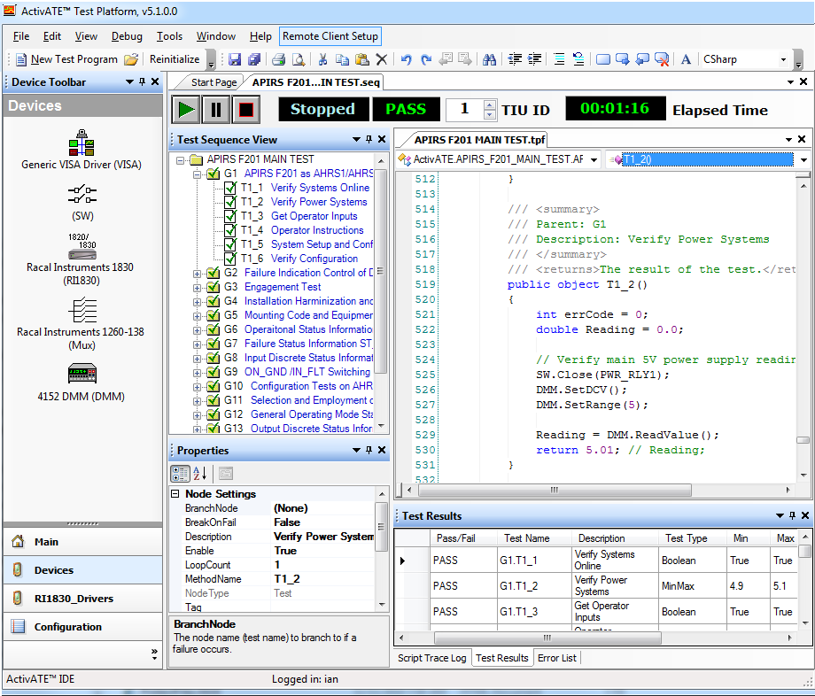
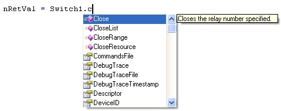
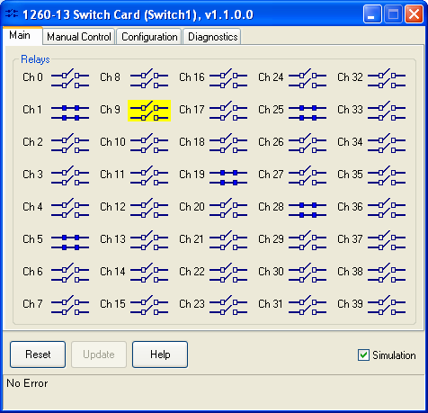

The ActivATE™ ATE Test Platform was designed from the ground up using Microsoft's® latest technology. It is a standard Windows® "look-and-feel" application written in C# for fast execution. Either VBScript, C#, or VB.Net may be used as the as the test program engine (or all three simultaneously). It combines a graphical user interface with text-based code that provides a very simple and easy-to-use yet extremely powerful environment, allowing for rapid application development.
With pre-defined access levels, ActivATE is well-suited for both the test engineer and the test operator on the shop floor. A multi-threaded test execution environment allows multiple TIU's (Test Interface Units or test heads) to run independently and concurrently.

The overall theory of test program development is quite simple. We add Groups and Tests to the tree in the Test Sequence View. Each Group and Test is called a node, and these nodes are capable of executing VBScript, C#, or VB.Net test code that performs certain functions, such as reading a DMM value. Typically, the test code is used to make calls into the device drivers (no need to use "CreateObject" in VBScript, we've done that for you). Each driver or device has its own set of APIs (Application Programming Interface) that perform certain functions. For example, a VBScript command to close a relay on a switch card would be: nRetVal = Switch1.Close(nRelay). As the test engineer adds nodes to the test sequence, a VBScript test shell (or .NET DLL for .NET code) is created behind the scenes for the user. No need to save or compile. Simply press the RUN (or Play) button to execute the program.
|  | ActivATE exposes all the methods and properties of the driver object to the user including the parameter list. |

Login levels and permissions, data logging, trace outputs, time stamping, error debugging, break points, loop on test, stop on test, stop on fail, and many more features are built into the environment. In addition, by using VBScript, the user also has full access to many other creatable objects such as Microsoft Excel®, Word®, and Access®, thus creating an open architecture that becomes very scalable. With .NET test code, the .NET System Namespace is fully exposed to the test program, making the ActivATE test environment a very robust and intuitive ATE platform.
|
 |
Driver GUI's are live and react accordingly as the test executes, permitting an extremely flexible environment for the test development. Simulation mode allows for desktop development and checkout without hardware. |
Language-specific color coding gives a clear and concise text environment for developing test programs. Script errors are reported in the trace output window where the user simply clicks on the error message to get to the exact line of script where the error occurred.

Astronics Test Systems
Last updated on January 7 2015 by M. Buccat